Overview
Slingshot is in all-in-one breakfast food for people that don't have time in the morning. It's a parfait yogurt drink with a lot of healthy nutrients. It includes granola and chia seeds, packed with protein, probiotics and omegas. You want the granola to stay fresh, so it's packaged separately around the top and you pour it into the drink right before you consume it. Because this is a novel interaction, many users didn't understand what they were supposed to do. I helped them develop a more intuitive label as well as designed some marketing material, designs and schwag.
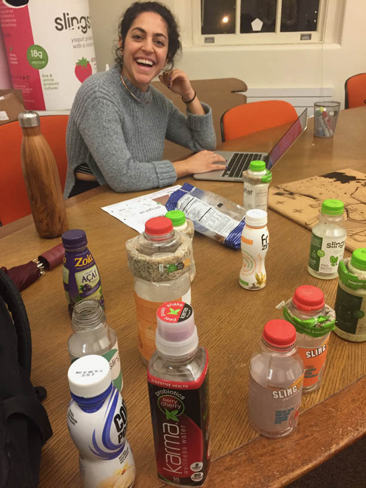
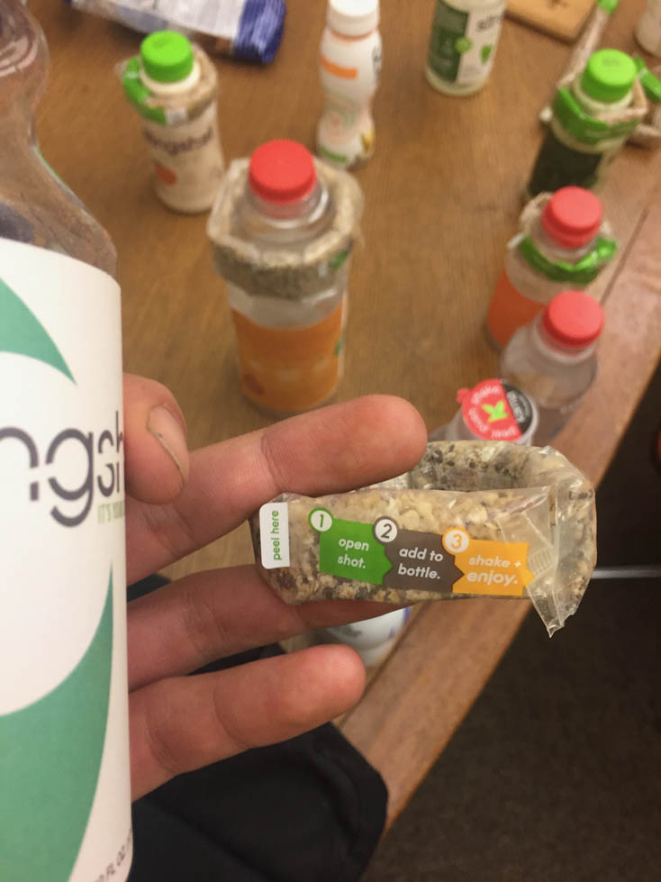
Here are some of the older Slingshot label designs as well as competitors.

Research
I headed to my local grocery store to research packaging design and find examples that I thought were particularly exceptional.
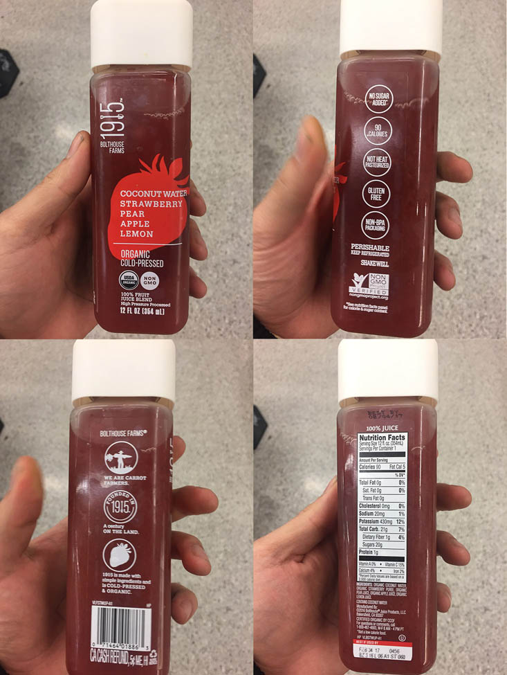
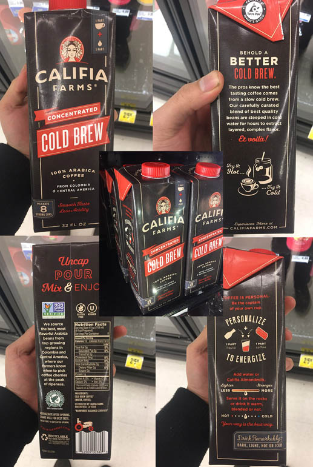
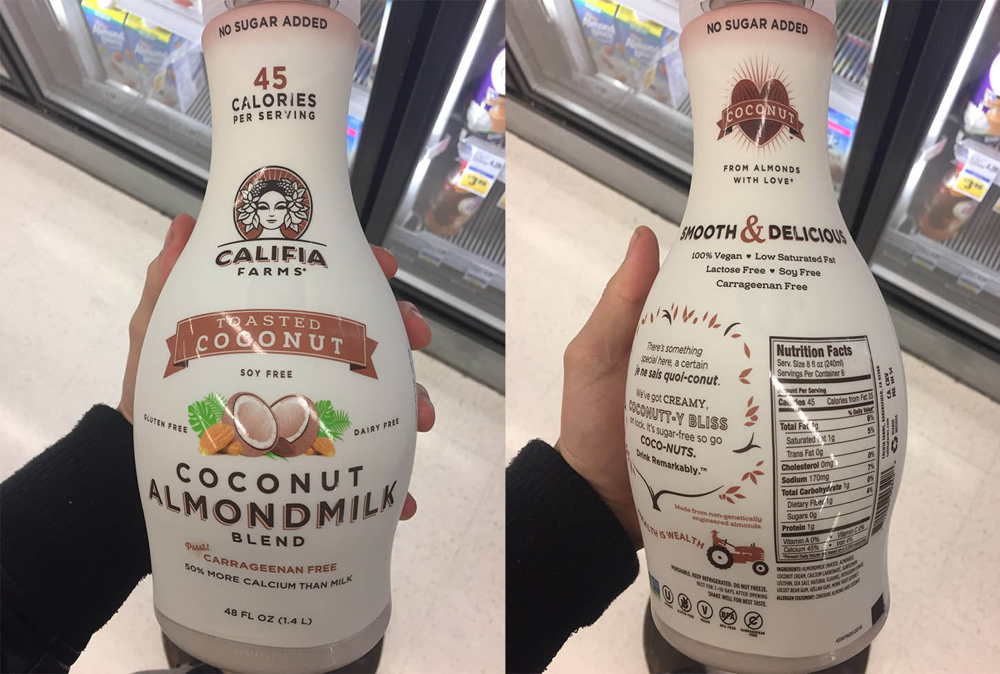
Bolthouse Farms Juice, Califia Cold Brew, and Califia Coconut Almond Milk
I showed the client these examples and she agreed that they were examples of exceptionally attractive, clean, and beautiful label design:
“The designs from Califia and 1915 are all ones that I admire. Clear lines and bold colors create a refined appearance. And yes, 1915 is certainly a product that does the clear bottle nicely.”
-Shamrina Oshana, Brand Manager
Bolthouse Farms uses a clear label which conveys honestly-sourced ingredients and a high-quality product. Califia makes good use of modern, clean, flat design with plenty of negative space. All of them use a consistent and limited color palette which thematically ties together the different elements, and have a balanced layout. They're differentiated from other products by lacking photorealistic fruit, distracting elements, or loud gaudy text styles.
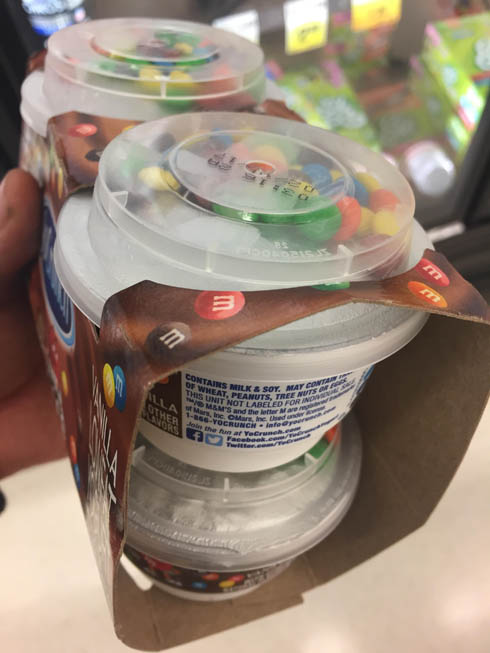
This M&M Candy design forces the user to remove the top, which contains the candy, before they can get to the snack.
One of the issues they were running into was that some people were drinking the beverage without even noticing the granola wrapped around the outside. This anti-affordance design from M&M forces the user to confront the M&Ms before continuing. I suggested such an approach might be used by Slingshot. However, they didn't want to add more plastic and didn't like the "top hat" ecstatic.

Shot Redesign
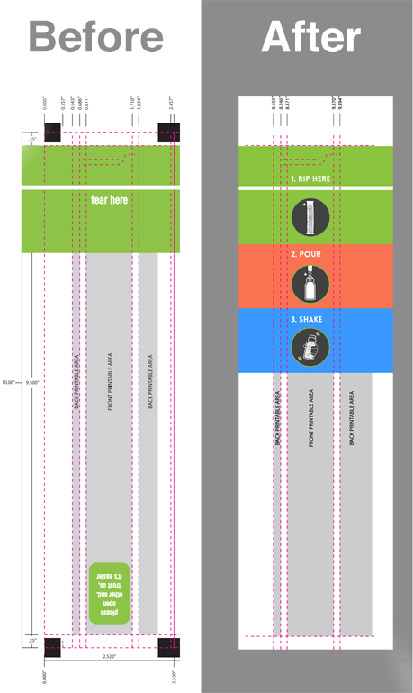
The shot is the name of the seed and granola tube package wrapped around the neck of the bottle. One of the usability issues they encountered was getting people to open the correct end of the shot. I redesigned the shot to incorporate three easy steps which intuitively explain the process. This, combined labeling on the bottle which leads people to the shot would hopefully result in fewer errors. The graphics were made by a previous designer and the colors were picked up from the dominant colors from their labels.

Coupon Design
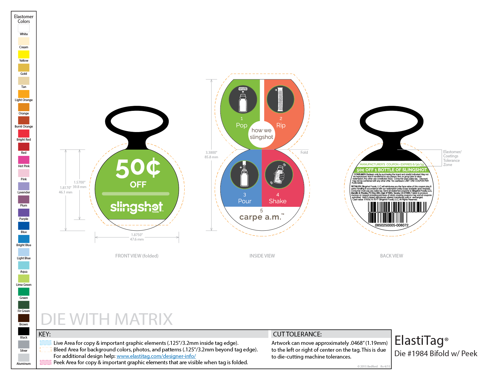
People love getting discounts and one common objection to Slingshot is the price point. This coupon offers 50 cents off the product and intuitively explains how you consume the product. The graphics were made by a previous designer and the colors were pulled from their existing labels.

Marketing Design
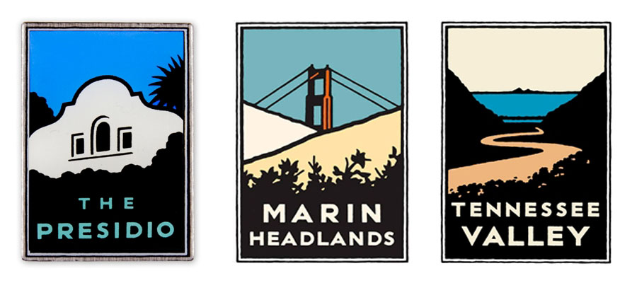
The client liked these patches made by the parks conservancy and wanted something in a similar style.
I designed these circular and rectangular patches for a branded Slingshot hat.
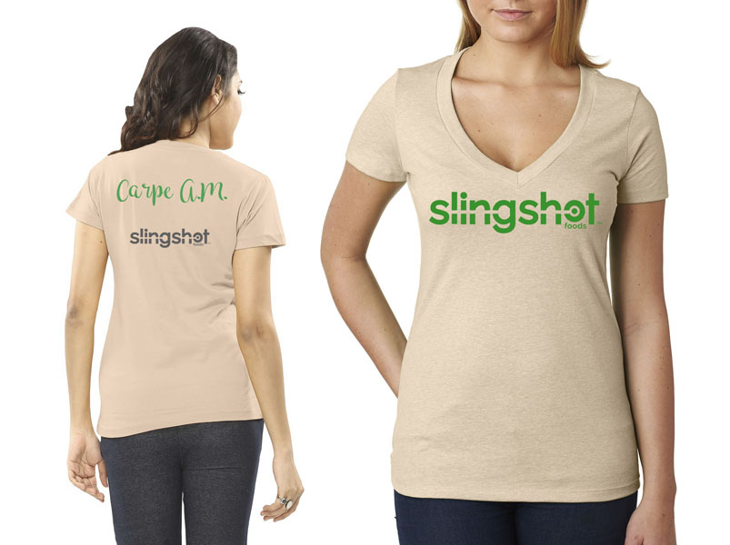
I designed this t-shirt for Brand Ambassadors which picks up the Slingshot branding and colors.

Booth Design
The client wanted a lasercut Slingshot sign for their marketing booth display for trade shows.
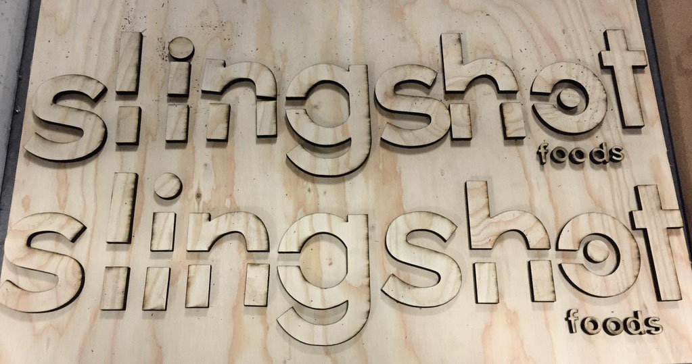
I lasercut this sign out of plywood.
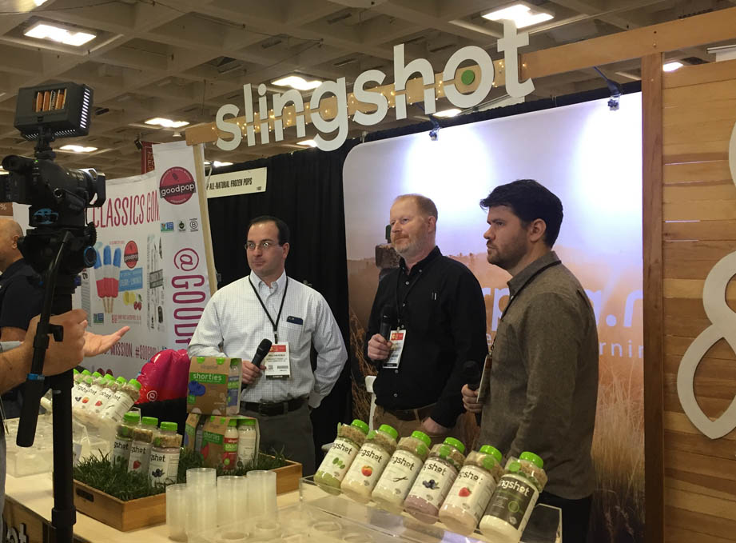
Here's the finished sign at their booth.
“Ben is a creative and imaginative designer. He lights up when presented with problems, talking through goals, and finding solutions. His is a visual story teller and produces wonderful work.”
-Shamrina Oshana, Brand Manager